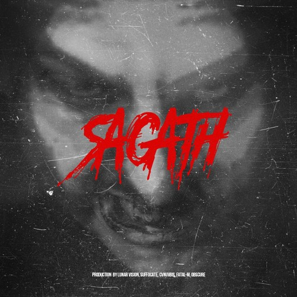
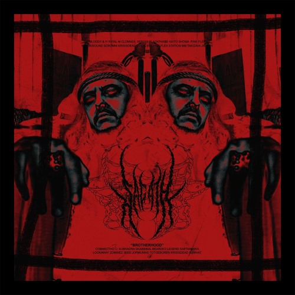
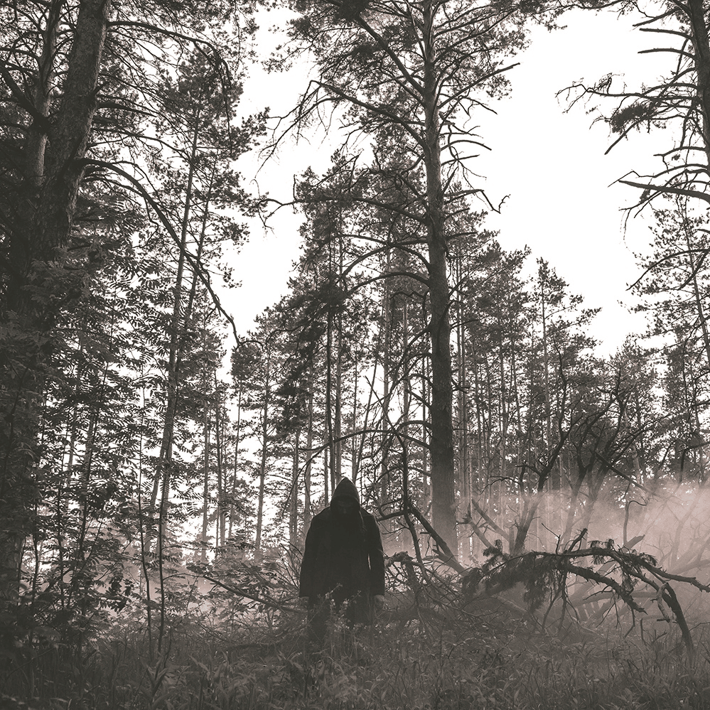
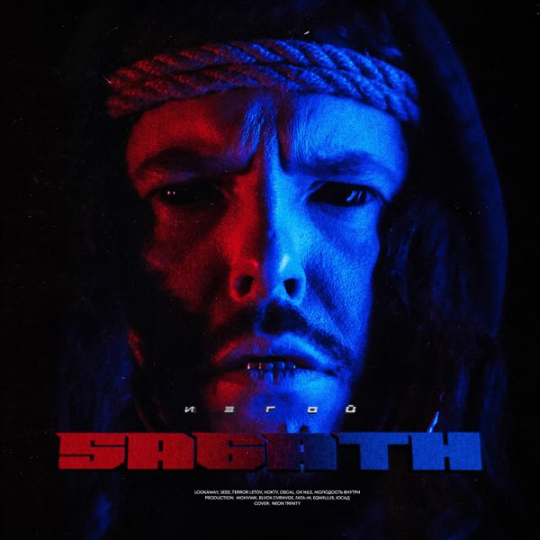

Музыкальная биография
Monastery
Первый альбом Sagath'а выпущеный в летом 2018 года. На тот момент об исполнителе ничего не было известно, но большенство уже зацепил очень сильной и мрачной атмосферой. Сам альбом спустя столько времени не сильно выделяется, но спустя 6 лет получит продолжение "Monastery 2"
Brotherhood
Спустя 3 альбома Sagath выпускает как по мне один из лучших альбомов. Тут он начал эксперементировать с звуком и уже есть очень много интересных фитов с другими исполнителями. Большенство треков короткие что идет на пользу к общему впечетлению. Так же альбом получит продолжение "Brotherhood 2" который как по мне слобее. У этих альбомов досихпор много фанатов которые считают что это прайм Sagath'а
Brotherhood 2
Прямое продолжение. Тут треки пребавили в длине что кажется лишним. Но также есть вступление и аутро что даёт более сильную атмосферу. В альбоме есть очень значемые треки для биографии, а именно: "Знак", "Нечем дышать", "Исповедь". Также в альбоме впервые упоменается прозвище "Папа мрака"

Тишъ
Эксперементальный альбом так как является лирикой, но из-за этого самые сильные текста после альбома "Тёмное добро". Альбом вышел в 2019 году перед "Brotherhood 2", из-за чего его многие могли пропустить. Но это не меняет его ценности и то что это самый эмоцеональны альбом. Также после этого альбома Sagath выпустил Каждый трек передаёт свою мысль либо же историю. Но sagath не чильно смог встать на этот жанр учитывая более умелых в нём исполнителей таких как "Pyrokenesis". Но я рекомендую ознакомится каждому именно с этим альбомом. Альбом потом получит deluxe версию где будет чуть больше треков.
Вынос тела
Альбом перешедщий на электро звучание. Я считаю его лучшим и показательным в целом как творчество Sagath'а. Тут уже отчетливо слышен продакшен исполнителя Fatak-m который сыграл большую роль. Альбом был тепло принят фанатами и получил продолжение "Вынос тела 2" где звук стал ещё тяжелее.

Изгой
Последний альбом который я хотел упомянуть. Он более массовый по звучанию но имеет много интересных решений и мыслей. Звук идёт в ещё более электро звучание но уже без темной атмосферы.
